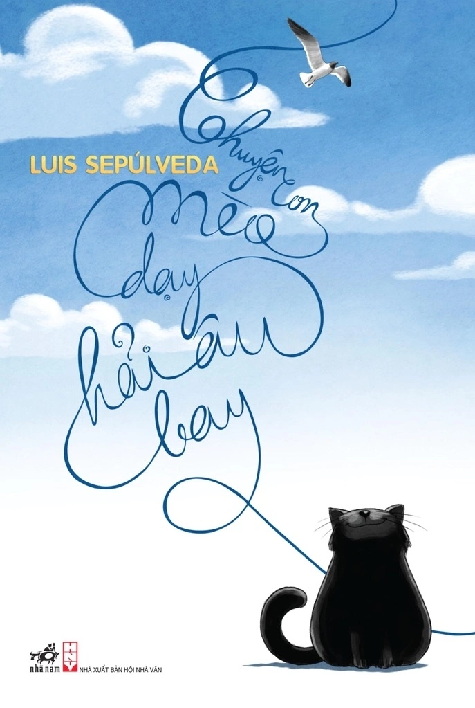

Tôi sống ở Huế - nơi có những mùa mưa lạnh, vì thế, "Nơi không có tuyết" của Huỳnh Trọng Khang tạo cho tôi sự đồng cảm, vừa thiếu vắng vừa gợi mở.
Cuốn Nơi không có tuyết bắt đầu ở miền nhiệt đới oi nồng, nơi có một cậu nhóc tò mò với chiếc tủ lạnh trong nhà. Với người lớn, đó chỉ là vật dụng quen thuộc. Nhưng với cậu bé, đó là cỗ máy có thể tạo ra tuyết. Những buổi trưa hè, cậu rón rén mở cửa tủ chỉ để nhìn lớp tuyết mỏng hình thành trong ngăn đá. Hình ảnh ấy vừa ngây thơ vừa đáng yêu. Nó làm tôi nhớ đến cảm giác háo hức khi còn nhỏ, khi chỉ một điều bé xíu cũng đủ khiến mình tin vào điều kỳ diệu. Thế nhưng, câu chuyện không dừng lại ở ký ức tuổi thơ. Nhiều năm sau, cậu bé lớn lên. Niềm say mê với tuyết không biến mất mà trở thành một ước mơ thật sự. Cậu dốc lòng học tập, dành dụm tiền và tự lắp ráp cho mình một chiếc phi cơ, với khát vọng chinh phục đỉnh tuyết băng vĩnh cửu của dãy Hy Mã Lạp Sơn. Hành trình ấy không chỉ là chuyến đi tìm tuyết, mà là hành trình theo đuổi ước mơ được nuôi dưỡng từ những ngày còn bé. Tôi thích chi tiết này vì nó giản dị mà thuyết phục. Có những ước mơ tưởng chừng rất trẻ con, nhưng nếu ta không quên, nó sẽ âm thầm dẫn lối cho ta trưởng thành. Cao trào của câu chuyện là trong đêm trường bão tuyết, khi "phi công" gặp một bông tuyết xa xưa. Bông tuyết bé tí ti ấy lại là chứng nhân cho bao nỗi buồn thương của muôn người, muôn vật trên Trái Đất. Giữa khung cảnh lạnh giá và dữ dội, một cuộc hàn huyên bắt đầu. Đó không phải là cuộc đối thoại ồn ào, mà là sự sẻ chia lặng lẽ giữa con người và thiên nhiên. Chi tiết bông tuyết khiến tôi suy nghĩ nhiều. Một thứ nhỏ bé, mong manh lại mang trong mình ký ức của thời gian và những biến động của thế giới. Cuốn sách viết về xứ tuyết lạnh giá, nhưng lại để lại cảm giác ấm áp. Nó giống như một câu chuyện cổ tích, nhưng không hề xa rời thực tế. Qua hình ảnh bông tuyết, tôi cảm nhận được sự trân trọng dành cho những điều nhỏ nhoi - những điều người lớn đôi khi vô tình bỏ qua. Ở tuổi 23, tôi cũng đang đứng giữa nhiều lựa chọn. Có những ước mơ từng rất rõ ràng khi còn nhỏ, nhưng dần mờ đi vì lo toan và thực tế. Đọc hành trình của cậu bé trong truyện, tôi nhận ra rằng điều quan trọng không phải là ước mơ lớn hay nhỏ, mà là mình có còn giữ nó trong lòng hay không. Nơi không có tuyết không chỉ là miền đất nhiệt đới nơi nhân vật sinh ra. Với tôi, đó còn là biểu tượng cho những khoảng trống trong mỗi người - nơi ta nghĩ rằng mình thiếu điều gì đó. Nhưng nếu dám bước đi, dám nuôi dưỡng khát khao, ta vẫn có thể chạm đến "tuyết" của riêng mình. Cuốn sách không quá kịch tính, cũng không cố gắng gây ấn tượng mạnh. Nó nhẹ nhàng, giống như một lời nhắc nhở. Khi gấp sách lại, tôi không thấy choáng ngợp, mà thấy lòng mình lắng xuống. Tôi nghĩ về cậu bé năm nào mở tủ lạnh để ngắm tuyết, nghĩ về người phi công giữa bão tuyết trò chuyện với một bông tuyết nhỏ. Và tôi tự hỏi: Liệu mình có còn đủ tin tưởng và kiên nhẫn để theo đuổi những điều từng làm tim mình rung động? Với tôi, Nơi không có tuyết không chỉ là câu chuyện về hành trình đến Hy Mã Lạp Sơn. Đó là câu chuyện về việc giữ lại sự mơ mộng giữa đời sống nhiều thực tế. Nguyễn Phước Hương Giang ← Quay lại